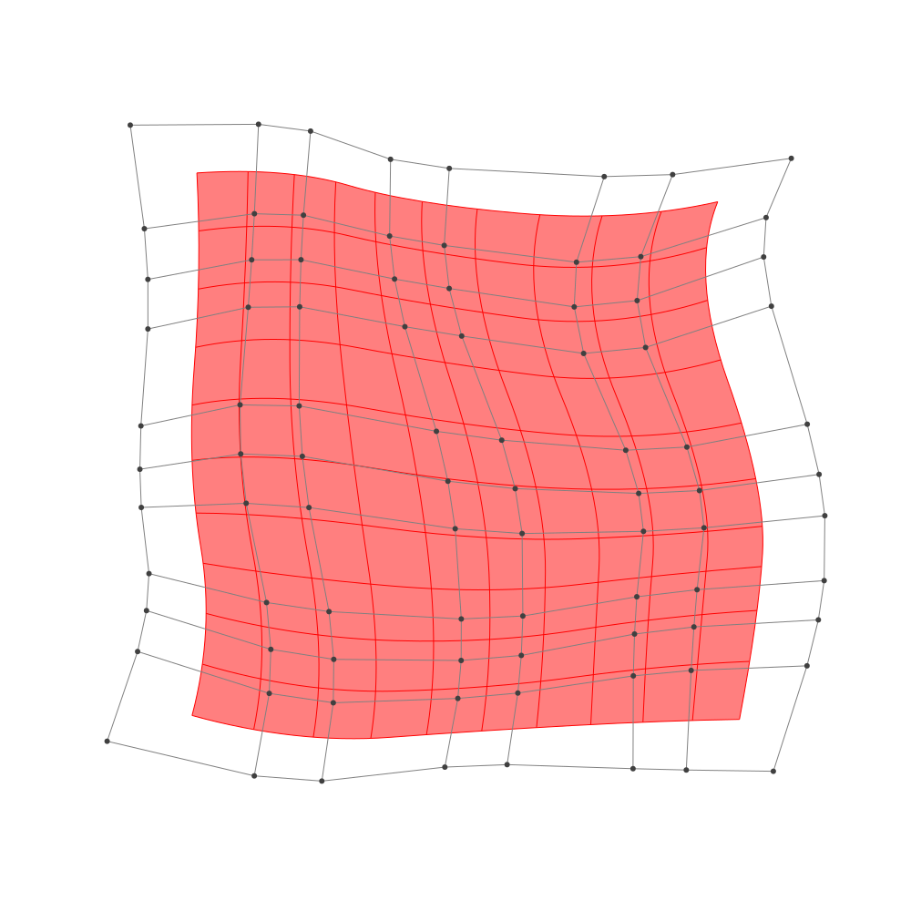

Refinement
BasicBSpline.refinement — FunctionRefinement of B-spline manifold with given B-spline spaces.
julia> p = 2 # degree of polynomial2julia> k = KnotVector(1:8) # knot vectorKnotVector([1.0, 2.0, 3.0, 4.0, 5.0, 6.0, 7.0, 8.0])julia> P = BSplineSpace{p}(k) # B-spline spaceBSplineSpace{2, Float64}(KnotVector([1.0, 2.0, 3.0, 4.0, 5.0, 6.0, 7.0, 8.0]))julia> rand_a = [SVector(rand(), rand()) for i in 1:dim(P), j in 1:dim(P)]5×5 Matrix{StaticArrays.SVector{2, Float64}}: [0.0834626, 0.956331] [0.837893, 0.965214] … [0.475643, 0.712184] [0.63438, 0.445186] [0.877534, 0.216432] [0.737228, 0.609808] [0.647446, 0.75393] [0.940874, 0.209288] [0.00310867, 0.0849325] [0.807249, 0.512722] [0.755893, 0.666748] [0.74146, 0.0206486] [0.00361801, 0.443389] [0.900821, 0.79077] [0.640896, 0.10025]julia> a = [SVector(2*i-6.5, 2*j-6.5) for i in 1:dim(P), j in 1:dim(P)] + rand_a # random5×5 Matrix{StaticArrays.SVector{2, Float64}}: [-4.41654, -3.54367] [-3.66211, -1.53479] … [-4.02436, 4.21218] [-1.86562, -4.05481] [-1.62247, -2.28357] [-1.76277, 4.10981] [0.147446, -3.74607] [0.440874, -2.29071] [-0.496891, 3.58493] [2.30725, -3.98728] [2.25589, -1.83325] [2.24146, 3.52065] [3.50362, -4.05661] [4.40082, -1.70923] [4.1409, 3.60025]julia> M = BSplineManifold(a,(P,P)) # Define B-spline manifoldBSplineManifold{2, (2, 2), StaticArrays.SVector{2, Float64}, Tuple{BSplineSpace{2, Float64}, BSplineSpace{2, Float64}}}((BSplineSpace{2, Float64}(KnotVector([1.0, 2.0, 3.0, 4.0, 5.0, 6.0, 7.0, 8.0])), BSplineSpace{2, Float64}(KnotVector([1.0, 2.0, 3.0, 4.0, 5.0, 6.0, 7.0, 8.0]))), StaticArrays.SVector{2, Float64}[[-4.416537437380729, -3.543669313838503] [-3.6621065522238987, -1.5347860499305752] … [-3.615050134391073, 1.8605315347976923] [-4.0243574644164894, 4.212184230540101]; [-1.865619922532166, -4.054813993440452] [-1.622465813077318, -2.2835677616567116] … [-1.952937515676544, 2.22361450371723] [-1.7627720391179733, 4.109808497287344]; … ; [2.307248545096658, -3.9872775642111] [2.255892639540651, -1.8332516602886897] … [1.5071387807534111, 1.5939168639964874] [2.24145955287264, 3.520648580256066]; [3.5036180093757268, -4.056611111127852] [4.40082146619898, -1.7092302807253943] … [3.6237567254985006, 2.425578474017044] [4.140895897844636, 3.6002498890809043]])
h-refinemnet
Insert additional knots to knot vector.
julia> k₊=(KnotVector(3.3,4.2),KnotVector(3.8,3.2,5.3)) # additional knotvectors(KnotVector([3.3, 4.2]), KnotVector([3.2, 3.8, 5.3]))julia> M_h = refinement(M,k₊=k₊) # refinement of B-spline manifoldBSplineManifold{2, (2, 2), StaticArrays.SVector{2, Float64}, Tuple{BSplineSpace{2, Float64}, BSplineSpace{2, Float64}}}((BSplineSpace{2, Float64}(KnotVector([1.0, 2.0, 3.0, 3.3, 4.0, 4.2, 5.0, 6.0, 7.0, 8.0])), BSplineSpace{2, Float64}(KnotVector([1.0, 2.0, 3.0, 3.2, 3.8, 4.0, 5.0, 5.3, 6.0, 7.0, 8.0]))), StaticArrays.SVector{2, Float64}[[-4.416537437380729, -3.543669313838503] [-3.963878906286631, -2.338339355493746] … [-3.676446233894885, 2.2132794391590536] [-4.0243574644164894, 4.212184230540101]; [-2.758441052729163, -3.87591335557977] [-2.505180464158838, -2.763261839763446] … [-2.5376244330885034, 2.403901145494954] [-2.554326937972454, 4.145640003925809]; … ; [2.307248545096658, -3.9872775642111] [2.276435001763054, -2.6948620218576536] … [1.6172868965712954, 1.8829266214354239] [2.24145955287264, 3.520648580256066]; [3.5036180093757268, -4.056611111127852] [4.041940083469679, -2.6481826128863775] … [3.701327601350421, 2.601779186276623] [4.140895897844636, 3.6002498890809043]])julia> save_png("2dim_h-refinement.png", M_h) # save image
Note that this shape and the last shape are identical.
p-refinemnet
Increase the polynomial degree of B-spline manifold.
julia> p₊=(1,2) # additional degrees(1, 2)julia> M_p = refinement(M,p₊=p₊) # refinement of B-spline manifoldBSplineManifold{2, (3, 4), StaticArrays.SVector{2, Float64}, Tuple{BSplineSpace{3, Float64}, BSplineSpace{4, Float64}}}((BSplineSpace{3, Float64}(KnotVector([1.0, 2.0, 3.0, 3.0, 4.0, 4.0, 5.0, 5.0, 6.0, 6.0, 7.0, 8.0])), BSplineSpace{4, Float64}(KnotVector([1.0, 2.0, 3.0, 3.0, 3.0, 4.0, 4.0, 4.0, 5.0, 5.0, 5.0, 6.0, 6.0, 6.0, 7.0, 8.0]))), StaticArrays.SVector{2, Float64}[[-3.8240799959376783, -3.136540820800355] [-3.4894709513344266, -2.1519022748567385] … [-3.415380163504006, 2.489564424296039] [-3.570077761301382, 3.626602546986219]; [-2.2086811153222996, -3.516910112555685] [-2.044497662619709, -2.611483910653465] … [-2.207392949930322, 2.6540432865470143] [-2.162266278866369, 3.635928508513096]; … ; [2.5333277861866383, -3.452270224113288] [2.586696446940238, -2.3591443616120777] … [2.0344393979168545, 2.1828742155149863] [2.383501317328711, 3.0835683818784654]; [3.489000656102562, -3.4662667676444485] [3.858555770982581, -2.3086892629832225] … [3.409321094451399, 2.611971905329405] [3.6859891472722244, 3.2619793046276446]])julia> save_png("2dim_p-refinement.png", M_p) # save image

Note that this shape and the last shape are identical.